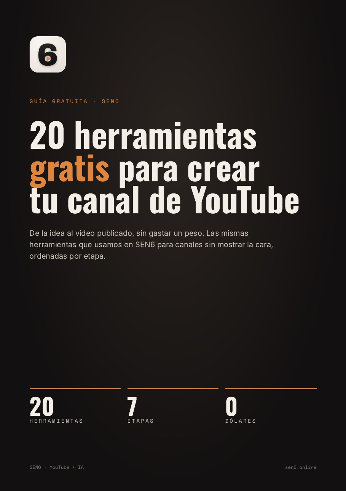

Guía gratuita · SEN6
20 herramientas gratis para crear tu canal de YouTube
De la idea al video publicado, sin gastar un peso. Las mismas herramientas que usamos en SEN6 para canales sin mostrar la cara, ordenadas por etapa.
- Tema
- Guion
- Voz
- Imágenes
- Edición
- Música
- Miniatura
5 páginas · sin registro · gratis
